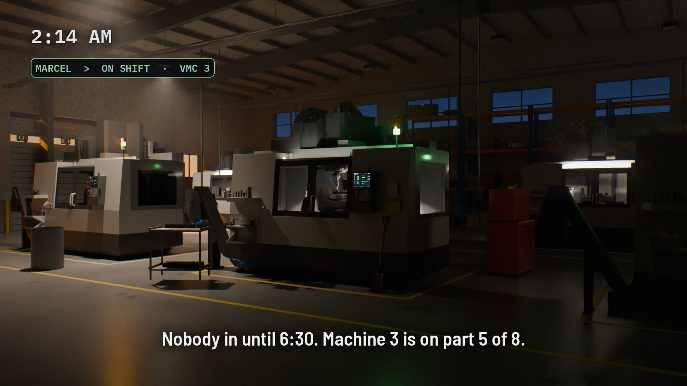
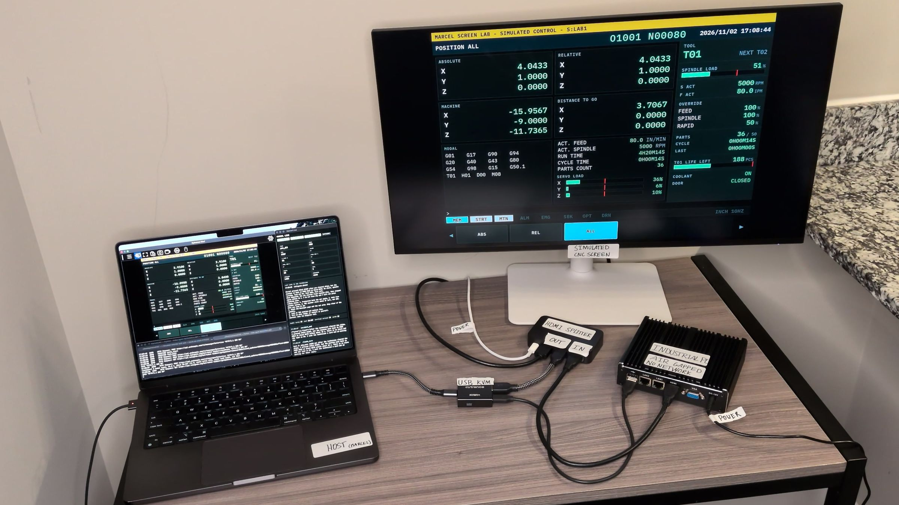
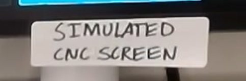
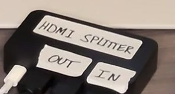
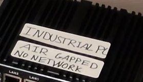
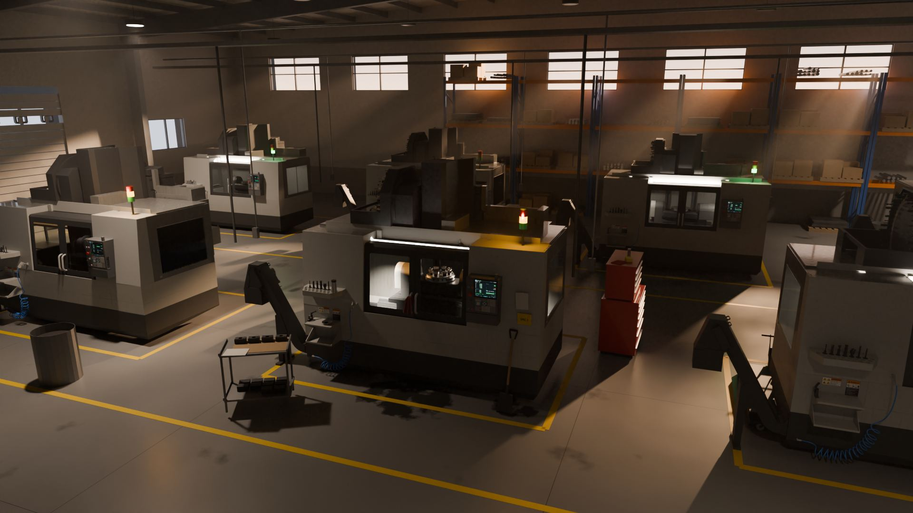

A stopped machine shouldn’t wait for morning.
Marcel is an air-gapped AI operator for American CNC shops. It reads the control’s own screen, holds the feed before a tool breaks, works from that machine’s manuals, and texts whoever is on call.

A rendered film of where Marcel is headed. Below it, you can run what works today.
Run it yourself. You’re the technician.
This is Marcel’s simulated run from November 2, redrawn in your browser. The screen is a simulated control. Marcel’s steps and its texts to the technician are copied from that run. It won’t restart the machine until you reply.
Marcel is reading the screen.
Monday, November 2
5:09
On-call phone. Texts from the shop land here.
Your move. Marcel won’t restart until you reply.
Redrawn from Marcel’s simulated run on November 2, 2026. Its messages are copied from that run. The control is a simulator running on an offline industrial PC. If you don’t reply, the technician answers after a few seconds so the run can finish.
Measured so far
8 s
early. In the simulated run, Marcel held the feed about 8 seconds before the spindle would have overloaded.
6–11 s
from an alarm to a cited fix on the technician’s phone, measured end to end in simulation.
2,100+
manual pages indexed, so every answer can point to a page.
0
invented citations across 16 test answers from a local model. A line without a source is removed.
The recordings.
Three recordings from November 2, 2026, with no sound. Each one says on screen what it shows, and when it’s sped up.
Working in simulation, on real hardware
The run you just played, filmed. An offline industrial PC runs a simulated CNC control, and Marcel works it through a small capture-and-keyboard device.
It sees spindle load climbing, pauses the cut, checks tool life and alarm history, texts the technician, then resets the counter and confirms the machine is running.
Working in simulation, on real hardware
In watch-only mode Marcel presses nothing. This is how a real machine starts.
When the spindle overloads and the machine alarms, the technician asks what happened. Marcel explains the alarm and how to recover. Parts of this clip run at 4× speed, and the screen says so.
Working on a real machine, from a phone
A ProtoTRAK RMX mill at a university machine shop, stopped by a fault. Nothing was installed on it.
A technician sent Marcel a photo of the screen. Marcel asked for the nameplate, identified the exact machine, and replied with fix steps from the maker’s manual, with page numbers.
Where each part stands
-
Working on a real machine
Reading a fault from a phone photo and answering from the maker’s manual, with page numbers. ProtoTRAK RMX, November 2, 2026.
-
Working in simulation
Reading the screen live, holding the feed, checking tool life and alarm history, texting the technician, and resetting the counter after the fix. A real capture-and-keyboard device and a simulated control.
-
Next
A read-only install on a real CNC control at a university machine shop, pending sign-off. Marcel will watch and alert. It won’t press anything.
-
Partly working: running offline
Running with no internet. Diagnosis already runs on a local model. The agent still calls a cloud AI model today, and moving it onto the box in your shop is next.
-
Partly working: manuals
Manuals for two controls are indexed with page citations, including the ProtoTRAK RMX pack. Haas NGC and Siemens 828D are in research. Marcel is designed to work across brands and ages of controls.
Your control stays off the network.
Marcel works a machine the way an operator does. It looks at the screen and uses the keyboard port. The control is never networked, and nothing is installed on it.


The operator’s screen. It keeps its picture the whole time.

Sends one copy of the picture to the screen and one to Marcel.
The capture-and-keyboard device. Video comes in. Keys go out like a plain USB keyboard.

Stands in for the CNC control. No network cable and no new software.
Where Marcel runs. For the first real install, a small box next to the machine takes its place.
What leaves the building
Today, two things: the texts to your phone, and what Marcel sends to a cloud AI model while it works out what happened. Diagnosis already runs on a local model.
Next, the whole agent moves onto the box in your shop. Then only the texts leave.
Nothing reaches the control except keystrokes, the same keys an operator would press, and only from a short reviewed list.
When Marcel acts, and when it won’t.
Trust is earned one step at a time, on each machine. A real machine starts on the first step.
-
Step 1
Watch
Reads the screen, explains alarms and texts the technician. Presses nothing.
Working in simulation. First real machine next.
-
Step 2
Stop
If a cut is going wrong, Marcel holds the feed right away. Stopping is the safe direction, so it doesn’t wait for anyone.
Working in simulation
-
Step 3
Ask
Anything that restarts or changes the machine waits for a technician’s yes. Marcel checks the screen after every key it presses.
Working in simulation
-
Step 4
Repeat what worked
Most stops repeat. A fix your shop has approved and seen work can become automatic, machine by machine. The film shows this step.
Planned
At every step, Marcel never jogs an axis, edits a program, or changes an offset or a parameter.
What a stopped night costs you.
When an alarm hits after hours, the machine usually waits for the morning shift. These are example numbers. Move them to match your shop.
$3,600
a month in spindle time, waiting for morning
$43,200 a year, over 48 stopped nights
$150 × 6 h × 4 stops
Pilot Marcel on one machineQuestions shops ask first.
Short answers. Ask us anything else.
Does Marcel put my machines on the internet?
No. The control never goes on a network. Marcel reads its screen through a splitter and sends keys like a plain USB keyboard.
Today, the box Marcel runs on sends texts and calls a cloud AI model. Next, the agent moves onto the box, and only the texts leave the building.
Will it jog an axis or change my programs?
No. Marcel never jogs an axis, edits a program, or changes an offset or a parameter.
Its actions come from a short reviewed list, like holding the feed or opening a page. After a technician approves, it can reset a tool counter and press cycle start, which runs your program as written.
What if Marcel gets it wrong?
Real machines start read-only. Stopping is the only thing Marcel does on its own, because stopping is the safe direction.
Anything that restarts or changes the machine waits for a technician’s yes, and Marcel checks the screen after every key. When Marcel explains an alarm, every line cites a manual page, or it’s removed. With no alarm, as in the run above, it says it has no manual source.
Which controls does it work with?
Marcel is designed to work across brands and ages of controls. It reads the screen the operator already uses. How it presses keys depends on the control, so that is checked on each machine before Marcel presses anything.
Manuals ready today: two controls, including ProtoTRAK RMX. Haas NGC and Siemens 828D are in research.
How is this different from machine monitoring?
Monitoring tells you a machine stopped, usually over the shop network or through added sensors.
Marcel reads the control’s own screen without putting the control on a network, holds the feed before damage, explains the alarm from the manual, and texts the fix.
What does a pilot look like?
One machine, read-only to start. A small box sits next to the machine, and a splitter goes on the screen cable.
Unplugging the splitter puts the machine back exactly as it was.

Pilot Marcel on one machine.
Run machines at night or short-handed? Tell us about one machine: its control, how old it is, and when it runs with nobody around. We’ll tell you plainly where Marcel stands for it.